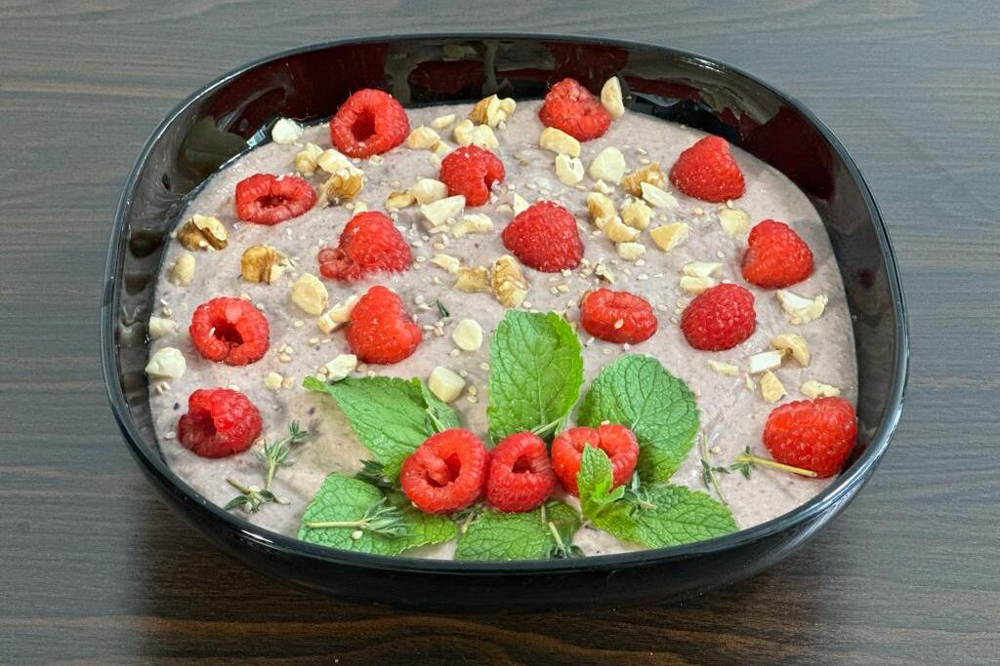

Ingredients - 2 Servings
- 1/4 organic lemon
- 1 1/2 apple
- 55g pumkin seeds
- 20g sesame seeds
- 7 deglet dates
- 120g chickpeas cooked
- 150g mixed frozen berries
- 1 pinch of salt
- 1 generous pinch of ground cloves
- 1 generous pinch of tumeric
- 1 pinch of ground pepper
- 300ml soy milk
- 200ml almond milk
- berries (topping)
- nuts (topping)
- mint (topping)
- thyme (topping)
Instructions
- Wash the apple and the lemon and cut it into small pieces, leave the skin on
- Put everything in a mixer and mix until its creamy
- If you like, top it off with herbs, berries and nuts